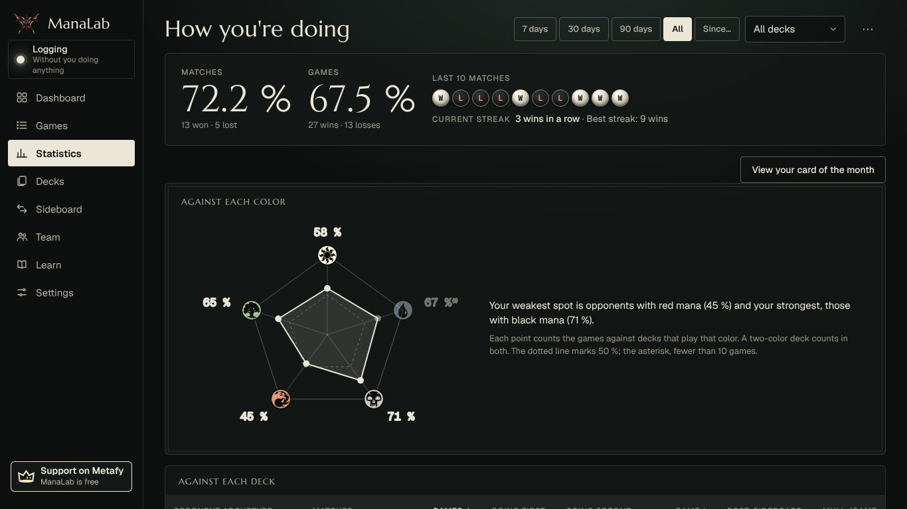
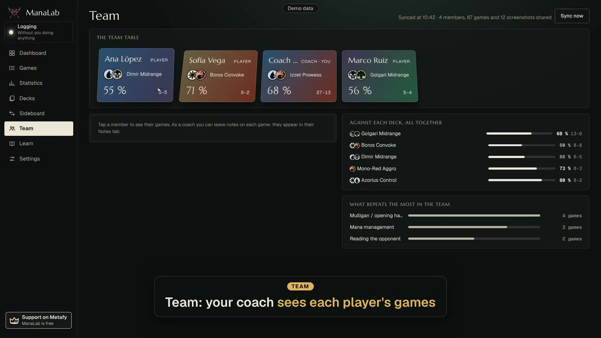

Guía de ManaLab
Qué hace cada parte de la app y cómo usarla, en Arena y Magic Online. Especialmente las funciones principales y el coach IA.
Qué es ManaLab
ManaLab guarda en tu PC cada partida que juegas en MTG Arena y Magic Online (MTGO) y te enseña qué funciona: tus porcentajes por mazo, por rival y por matchup, tus mulligans, tus errores y tus cambios de sideboard.
La app es gratis. Lo único de pago es el análisis de derrotas con IA: 6 $ al mes, con prueba gratis.
Primeros pasos
- Descarga la versión portable (ZIP), descomprímela y abre ManaLab. No necesita instalación. Para actualizar más adelante, descomprime la versión nueva encima de la carpeta anterior: tus datos se conservan.
- En Arena, ve a Opciones › Cuenta y activa «Registros detallados (compatibilidad con complementos)» (en inglés, «Detailed Logs (Plugin Support)»). Después reinicia Arena. Sin esto ManaLab no puede leer tus partidas de Arena. Magic Online no necesita ningún ajuste.
- Mientras no tengas ninguna partida, el Panel te enseña «Prepara la mesa», con los pasos que faltan y lo que guardará cada partida. Con «Ocultar» la quitas para siempre. Puedes volver a ver la guía de inicio en Ajustes › Datos y acerca de ManaLab, con «Ver la guía de inicio».
- ManaLab empieza a registrar solo al abrirse (puedes cambiarlo en Ajustes › Juegos). A partir de ahí cada partida, de Arena y de Magic Online, queda guardada sola. El indicador bajo el nombre de ManaLab en la barra lateral dice «Registrando».
- Juega en ventana o en ventana sin bordes: el overlay no se ve en pantalla completa exclusiva.
Requisitos: Windows 10 u 11, y Arena, Magic Online o ambos.
Magic Online
ManaLab registra MTGO igual que Arena y no hay nada que configurar: ni «Registros detallados» ni ajustes. Con ManaLab registrando, abre Magic Online y ManaLab lo recoge solo. El estado de Magic Online en la línea de arriba del Panel dice «No detectado» hasta que encuentra el juego, y desde entonces sigue tus partidas como el de Arena.
Registra todos los formatos: tus manos iniciales y mulligans, si empezaste primero o segundo, tu mazo, las cartas que enseña el rival, la vida, la repetición y la cronología. Tu mazo toma el nombre con el que lo guardaste en Magic Online si la lista coincide exactamente y, si no, se nombra por sus colores; un nombre que escribas tú en Mazos nunca se sustituye.
- Overlay: las cartas que te quedan en el mazo y las que ha enseñado el rival, sobre Magic Online (mira Overlay).
- Momentos destacados: «Capturar momento» funciona también en Magic Online (mira Capturas y momentos destacados). ManaLab no hace capturas por su cuenta.
- Importar: en Partidas, pulsa «⋯» › «Importar partidas», elige «Log de Arena o Magic Online» y escoge un
mtgo.logpara traer partidas que jugaste con ManaLab cerrado. Cuentan como tuyas y las que ya tienes no se duplican. - Ubicación del registro: Ajustes › Juegos, en el grupo Magic Online, «Archivo mtgo.log». Déjalo en «Predeterminado» salvo que Magic Online guarde su registro en otra carpeta.
Qué cambia en MTGO
- Las fases y las cartas giradas se deducen. Magic Online no las envía, así que ManaLab las deduce solo del registro. En la repetición, lo deducido lleva ≈, porque puede no ser exacto.
- Las fichas y los emblemas (Tesoro, Sangre, Mapa…) solo aparecen en la repetición. No salen en las cartas del rival, en tus listas de mazo ni en el overlay.
- El overlay puede enseñar menos que en Arena cuando el registro no trae el estado de la mesa.
- El banquillo: Magic Online no dice con qué mazo juegas las partidas 2 y 3 hasta que empiezan, así que ManaLab te lo pregunta (siguiente sección).
Más en la web: Tracker para Magic Online: qué guarda y cómo funciona.
Banquillo en Magic Online
Tras una partida, el registro de Magic Online repite tu lista original, aunque hayas cambiado el banquillo. La lista real solo llega cuando empieza la partida siguiente. Por eso, al empezar el banquillo, sale un panel pequeño «Banquillo · Partida N» sobre Magic Online. Nunca le quita el foco al juego y se cierra solo al empezar la partida siguiente. Tiene tres botones:
- «Usar este cambio» repite lo que hiciste la última vez contra el mismo mazo rival. Solo sale cuando hay una última vez.
- «Sin cambios» mantiene tu lista base.
- «Editar» abre ManaLab con tu mazo principal y tu banquillo lado a lado: − saca una copia, + mete una, y puedes buscar una carta. El contador «Entran · Salen» te avisa si no cuadran, pero aun así puedes confirmar.
Si ignoras el panel, la lista queda sin confirmar. Entonces el overlay muestra «Lista sin confirmar», probabilidades aproximadas que empiezan por ≈ y «≥ N cartas fuera (sin identificar)»: ManaLab sabe cuántas cartas salieron de tu mazo, no cuáles. Corrígelo con «Corregir banquillo» en la barra lateral, durante la partida o entre partidas. Elijas lo que elijas, la lista real del registro manda siempre en cuanto Magic Online la envía.
También puedes corregirlo después de la partida: en Partidas, abre la partida, ve a la pestaña Partida y pulsa «Corregir banquillo». Se ofrece en tus propias partidas de Magic Online, a partir de la 2, cuya lista no se confirmó. Las partidas posteriores del match que tampoco estaban confirmadas se recalculan a partir de tu corrección, y la partida pasa a contar como confirmada en las estadísticas, la guía de sideboard y el análisis con IA.
Una partida que nunca se confirmó muestra «Banquillo sin confirmar» en su pestaña Partida. La guía de sideboard no cuenta sus cambios, y al análisis con IA se le dice que son desconocidos, no que no hubo ninguno.
A partir de la partida 2, la pestaña Partida enseña lo que metiste y sacaste del banquillo respecto a tu lista original (la partida 1), bajo «Respecto a la lista original». Si has vuelto a la lista original, no se muestra nada. Para apagar el panel, usa «Preguntar por el cambio de banquillo (Magic Online)» en Ajustes › Overlay; «Corregir banquillo» sigue disponible.
Panel: tu mesa de hoy
El Panel se titula «Tu mesa de hoy» y te dice si ManaLab está registrando bien. Bajo el título, una línea muestra «Registrando» (o «En pausa») y el estado de cada juego: Arena y Magic Online dicen «Escuchando», «En partida», «No detectado» o «Detenido». El botón de arriba a la derecha es «Pausar el registro»; con el registro en pausa, una franja avisa de que las partidas que juegues ahora no se guardan, y «Reanudar» lo vuelve a activar. Debajo ves:
- Sesión de hoy: tu marcador de hoy en matches y en partidas, una columna por match y, a la derecha, tus últimos 7 días (el porcentaje de victorias frente a los 7 días anteriores), la racha actual, el tiempo de juego y tus últimos 10 matches. «Ver el resumen de la sesión» abre el resumen completo.
- Match en curso: mientras juegas, tu mazo y el número de partida; al terminar pasa a ser «Último match», con el resultado, los dos mazos y los botones «Ver la repetición», «Marcar qué falló» y, tras una derrota, «Analizar con IA».
- Últimos matches: tus matches más recientes por días (pulsa uno para ver sus partidas); «Ver todos» abre Partidas.
- Para revisar: tus derrotas recientes sin errores marcados ni notas, cada una con su botón «Revisar».
- Lo que más se repite: los errores que más etiquetas, en 30 días; «30 días · ver todo» los abre en Estadísticas.
- Actividad: lo último que ha hecho ManaLab, con «Ver registro» para el registro completo.
Mientras no tengas ninguna partida, en lugar de estas tarjetas verás «Prepara la mesa», con los pasos para dejarlo todo listo. Si hay una versión nueva, arriba sale un aviso. La barra lateral tiene también «Capturar momento» durante una partida.

Partidas: tus matches
Aquí está todo el historial, por días y con el rival delante. Arriba a la derecha, un buscador encuentra un rival, un mazo o un evento, y «Todos», «Victorias» y «Derrotas» filtran por resultado; bajo el título tienes el filtro de Mazo y, cuando tienes partidas en más de un formato, el de Formato. Cada fila es un match, con su resultado, el mazo del rival, el tuyo, sus partidas y el marcador. Pulsa un match para ver su duelo a la derecha, con «Abrir la partida» y «Ver la repetición», y para desplegar sus partidas, que muestran si empezaste primero o segundo.
El botón «⋯» («Más opciones de Partidas») tiene «Preparar sesión» e «Importar partidas». Cada partida muestra su formato; si ManaLab no pudo leerlo, o quieres cambiarlo, usa «Fijar el formato…» en el menú «⋯» de la partida.
Al abrir una partida ves estas pestañas («Volver» te lleva a la lista):
- Match: el resumen del match y sus partidas.
- Partida: mano inicial, si empezaste primero o segundo, mulligans, lo que metiste y sacaste del sideboard, y tus capturas.
- Repetición: la partida paso a paso, turno a turno, con una vista de Resumen. En Magic Online, los pasos deducidos llevan ≈ y las fichas solo aparecen aquí.
- Oponente: las cartas del rival que has visto y su arquetipo detectado.
- Análisis: la explicación con IA (suscriptores y prueba gratis).
- Notas: tus errores y tus notas.


Vídeo en la web: https://manalab.es/guia/guia_manalab_es.html#video-replay

Vídeo en la web: https://manalab.es/guia/guia_manalab_es.html#video-opening-hand-mulligans

Vídeo en la web: https://manalab.es/guia/guia_manalab_es.html#video-opponent
Importar partidas
En Partidas, «⋯» › «Importar partidas» trae partidas de dos sitios: un archivo .manalab que te pase otra persona (lo crea «Exportar partida» en el menú «⋯» de cada partida) o un log de Arena o Magic Online: un Player.log de Arena o un mtgo.log de Magic Online, con partidas que jugaste con ManaLab cerrado o en otro PC.
Eliges qué partidas importar y las que ya tienes quedan marcadas, así que no se duplican. Las importadas tienen repetición, manos, mulligans, mazo, notas y etiquetas del coach, pero no capturas ni análisis con IA.
Si juegas con ManaLab cerrado, no hace falta que lo hagas a mano: al empezar a registrar, ManaLab mira en el registro de Arena y, si encuentra partidas que no tienes, una franja dorada del Panel te las ofrece con «Recuperarla» (o «Recuperar las N»), «Ver cuáles» y «Ahora no». Esas partidas no tienen capturas, como cualquier partida importada de un log.
Las partidas de otro jugador llevan su marca y nunca cuentan en tus estadísticas, tendencias, informes ni en el equipo. Las que importas de tu propio log sí cuentan como tuyas.

Vídeo en la web: https://manalab.es/guia/guia_manalab_es.html#video-import-games
Capturas y momentos destacados
ManaLab no hace capturas por su cuenta: la mano inicial, los mulligans y el resultado ya quedan guardados en los datos de cada partida. Lo que sí puedes hacer es guardar una captura del momento que quieras, en Arena y en Magic Online. Es un momento destacado.
- Pulsa F8 (puedes cambiar la tecla en Ajustes › Juegos, en «Capturas y momentos destacados», con «Atajo de teclado» y «Tecla»).
- O pulsa el botón «Capturar momento» que sale sobre el juego (puedes quitarlo con «Mostrar el botón sobre el juego durante la partida»).
- O pulsa «Capturar momento» en la barra lateral de ManaLab.
Los botones solo aparecen mientras hay una partida en curso. Si la línea de estado del Panel dice «Ventana no detectada, sin capturas», ManaLab no encuentra la ventana del juego y no puede capturar: abre el juego en ventana o en ventana sin bordes.
Después, en la pestaña Partida, abre la captura y escribe una nota sobre ese momento.

Vídeo en la web: https://manalab.es/guia/guia_manalab_es.html#video-capture-moment
Notas y errores
En la pestaña Notas de cada partida marcas los errores que cometiste (con etiquetas) y escribes lo que quieras recordar. Estos errores son la base del informe que puedes enviar a tu coach y de las estadísticas de errores repetidos.
Mazos
Aquí aparece cada mazo que has jugado, en su propia caja, con los símbolos de maná de sus colores, tus matches y tu porcentaje de victorias. Pasa el ratón por una caja para abrirla y púlsala para elegir ese mazo y ver sus detalles. Desde esta pantalla puedes:
- Cambiar el nombre de un mazo («Nombre del mazo», con «Guardar» o «Cancelar»), o volver al que usa Arena con «Usar nombre de Arena». En Magic Online el mazo toma el nombre con el que lo guardaste si la lista coincide exactamente; si no, ManaLab lo nombra por sus colores.
- Cambiar el aspecto de su caja en «Acabado de la caja»: «Lisa», «Grabada» o «Con brillo».
- Ver su porcentaje de victorias, su «Mejor matchup» y su «Peor matchup», y la «Curva de maná · hechizos por coste» de la lista elegida.
- Elegir una variante cuando un mazo tiene más de una lista («Variante») y ver su lista y su sideboard.
- Comprobar tus matches y tu porcentaje con el mazo. Mazos cuenta matches, no partidas sueltas, y los matches sin terminar no cuentan.
Para revisar tus partidas con los últimos mazos del meta, ve a Ajustes › Idioma y aspecto, en «Mazos del meta», y pulsa «Reclasificar partidas».
Estadísticas: tus porcentajes
La pantalla «Cómo te va» tiene arriba un selector de periodo, «7 días», «30 días», «90 días», «Todo» o «Desde…» (eliges una fecha de inicio), y dos filtros, Formato (solo sale cuando tienes partidas en más de un formato) y Mazo. Cada partida guarda su formato real, así que puedes mirar un formato cada vez. El periodo que eliges se recuerda. Ves:
- Tu porcentaje de victorias en matches y en partidas, cada uno comparado con el periodo anterior de la misma duración, además de tus últimos 10 matches y tu racha actual. «Ver tu carta del mes» abre tu carta del mes.
- «Contra cada color»: una rueda con tu porcentaje de victorias contra los rivales que juegan cada color.
- «Contra cada mazo»: la tabla de matchups, que te dice contra qué mazos ganas y contra cuáles pierdes, con el resultado de la partida 1 y el de después del sideboard. Un asterisco (*) indica menos de 10 partidas.
- «Últimos días»: un gráfico de tus victorias y derrotas por día.
- «Desglose»: por mulligans, primero / segundo, mazo y oponente, contado en partidas o en matches.
- «Lo que más se repite»: los errores que marcaste, en 30 días, 90 días o todo el historial, y «Errores marcados».
El mazo del rival se nombra comparando sus cartas con los mazos del meta más jugados del formato de la partida, que se actualizan cada 3 días (Ajustes › Idioma y aspecto). Si nada encaja con claridad, se nombra por sus colores.
El menú «⋯» tiene «Informe HTML» y «Exportar para el coach».


Vídeo en la web: https://manalab.es/guia/guia_manalab_es.html#video-statistics
Sideboard: tu plan por matchup
Elige tu mazo y tu rival. ManaLab muestra tus resultados en ese matchup («Partida 1», «Con sideboard», «Total», «Primero» y «Segundo») y sugiere qué sacar y qué meter, cada cosa con su nivel de confianza, según tus propias partidas.
Tu plan lo montas tocando cartas: en «Del banquillo · toca las que entran» eliges las que entran y en «Del principal · toca las que salen» las que salen. Se guarda solo. En «Notas para este matchup» apuntas lo que quieras recordar y, en «Escribir el plan a mano», puedes teclear el plan en «Meto» y «Saco». Tu plan y tus notas aparecen en el informe para el coach. «Volver a lo que haces siempre» pone los cambios que repites en este matchup y «Deshacer» recupera tu plan anterior.
Más abajo ves «Cambios que has hecho en este matchup», «Tus cartas en este matchup» (cómo rinde cada una) y «Cartas del rival que más has visto». En Magic Online no cuentan las partidas cuyo banquillo nunca se confirmó.
Con suscripción, «Pedir plan a la IA» te propone un plan de sideboard basado en tus partidas de ese matchup, en «Plan propuesto por la IA». No sustituye al tuyo.

Vídeo en la web: https://manalab.es/guia/guia_manalab_es.html#video-sideboard-guide
Overlay: tu mazo sobre el juego
El overlay son dos paneles sobre la ventana del juego, en Arena y en Magic Online. Mi panel muestra las cartas que te quedan en la biblioteca, con las copias que quedan sobre las del mazo (por defecto en cifra, como 2/4), la probabilidad de robar cada una y una fila de Tierras. El panel del rival muestra las cartas que ha jugado o enseñado, cuántas copias has visto y, cuando ManaLab lo reconoce, su arquetipo. Solo enseña información pública o lo que se puede deducir de lo jugado.
Aparece cuando el juego es la ventana activa, en ventana o en ventana sin bordes (no en pantalla completa exclusiva). Si la línea de estado del Panel dice «Ventana no detectada, sin capturas», ManaLab no encuentra la ventana del juego: ábrelo en ventana o en ventana sin bordes. En Ajustes › Overlay puedes elegir:
- «Mostrar el overlay» (activado por defecto) y «Probar sobre Arena», que lo enseña 10 segundos.
- El «Tamaño del panel» (completo, intermedio o mínimo), los «Colores» (con una opción para daltonismo, con las letras W U B R G) y el alto contraste.
- «Probabilidad que se muestra»: la del próximo robo o la de los próximos 2 o 3.
- «Opacidad del fondo», «Tamaño» y «Altura desde arriba». También puedes mover cada panel arrastrando su barra de arriba, sobre el juego; «Restablecer el overlay por defecto» lo devuelve a su sitio.
- «Cuándo se ve»: «Siempre visible» o «Solo al pasar el ratón por una zona».
- «Qué mostrar», con un interruptor para cada elemento de cada panel. En «Cada carta» de Mi panel, «Copias» elige entre «Cifra (2/4)» (por defecto: copias que quedan y copias del mazo) y «Rombos» (un rombo lleno por cada copia que queda).
Marca de ManaLab: un «ManaLab» pequeño en una esquina de Mi panel, para que quien vea tu directo sepa qué usas. Se apaga en Ajustes › Overlay › Qué mostrar › Mi panel › «Marca de ManaLab».
Lista de tierras: pasa el ratón por la fila «Tierras» de Mi panel y se abre una lista con cada tierra que te queda, sus copias sobre el total y la probabilidad de robarla a continuación. Funciona igual en Arena y en Magic Online. Se activa en Ajustes › Overlay › Qué mostrar › Mi panel: Lista de tierras al pasar el ratón por «Tierras» (activada por defecto; necesita la fila de Tierras).
Entre partidas de un match al mejor de tres, si guardaste un plan para ese rival en Sideboard, un panel en el centro del juego te lo recuerda («Entran», «Salen» y tu nota) y se quita solo al empezar la partida siguiente.
En Magic Online, cuando el registro trae líneas de la mesa, ManaLab deduce tu mano y tu biblioteca y enseña sus probabilidades. Cuando no trae ninguna, el overlay solo muestra la lista del mazo, con las copias que quedan y las totales: sin mano, sin número de cartas en la biblioteca y sin probabilidad de robo. Nunca enseña números inventados. Tras un cambio de banquillo puede mostrar «Lista sin confirmar», probabilidades con ≈ y «≥ N cartas fuera (sin identificar)» (mira Banquillo en Magic Online).

Vídeo en la web: https://manalab.es/guia/guia_manalab_es.html#video-in-game-overlay
Coach IA: análisis de derrotas
El coach IA explica qué salió mal en una derrota y qué probar la próxima vez. Es lo único de pago de ManaLab: 6 $ al mes, con la membresía «ManaLab AI Coach» de Metafy. Antes puedes probarlo gratis.
- Suscríbete en Metafy (botón «Suscribirme en Metafy» en Ajustes › Equipo e IA o en la pestaña Análisis). Recibirás un código por correo.
- Ve a Ajustes › Equipo e IA, pega el código en «Código de suscripción» y pulsa «Comprobar».
- Abre una derrota en Partidas y ve a la pestaña Análisis.
- Si quieres, escribe una pregunta concreta, por ejemplo: «¿debí hacer mulligan?» o «¿ataqué mal en el turno 5?».
- Pulsa «Analizar con IA». Tarda unos segundos. La respuesta queda guardada, así que no pagas dos veces por la misma partida.
Prueba gratis: pulsa «Pedir prueba gratis» (en Ajustes › Equipo e IA o en la pestaña Análisis). Se abre tu programa de correo con un mensaje preparado. Envíalo y te respondemos con un código para 5 análisis, válido 30 días. No hace falta tarjeta ni cuenta. Introduces el código como se explica arriba.
Cada código tiene un límite diario, y la pestaña te dice cuántos análisis te quedan. Solo se pueden analizar tus propias partidas, no las importadas.
Solo se envían los datos de la partida que analizas: tu mazo y sideboard, las cartas del rival vistas, la cronología de la partida, un breve resumen de las otras partidas del match y la pregunta que escribas. Nunca se envían tu nombre, el de tu rival ni el archivo de registro completo.
Exportar para el coach y Equipo
«Exportar para el coach» (en el menú «⋯» de Estadísticas) crea una página con tu resumen, tus matchups, tus errores marcados y tus partidas con sus notas. Se abre en el navegador: desde ahí puedes imprimirla o guardarla como PDF y enviarla a tu coach.
En Partidas, «⋯» › «Preparar sesión» te deja marcar las partidas que quieres repasar y «Crear informe de sesión» crea un único informe con tus manos, mulligans, momentos clave, resumen por turnos, notas y momentos destacados. Puedes ocultar el nombre de tus rivales. Se abre en el navegador y funciona sin conexión: imprímelo o guárdalo como PDF.
Más en la web: Guía para coaches: cómo revisar a un alumno.

Vídeo en la web: https://manalab.es/guia/guia_manalab_es.html#video-prepare-session
En Equipo puedes compartir partidas y notas con tu equipo a través de una carpeta común (Google Drive, Dropbox u OneDrive). Primero configúralo en Ajustes › Equipo e IA: carpeta del equipo, tu nombre y tu rol (jugador o coach), y pulsa «Sincronizar ahora». Cada persona escribe solo en su subcarpeta. También se comparten las capturas con sus notas (puedes desactivarlo en Ajustes › Equipo e IA) y puedes ocultar el nombre de tus rivales.
En la pantalla Equipo, cada partida de un compañero se ve con el mismo detalle que las tuyas: manos, capturas con sus notas, repetición, mazo del rival y notas. Si eres coach, escribes tu nota en la pestaña Notas.

Vídeo en la web: https://manalab.es/guia/guia_manalab_es.html#video-coach-tags-trends-team
Aprender: guías de Metafy
Aprender reúne guías de Metafy, la plataforma donde los jugadores publican guías y dan clases. Todo se abre en tu navegador: ManaLab solo enseña la lista.
- «Destacado · colaboración» es un creador que colabora con ManaLab. Si hay más de uno, se van turnando solos; «Ver en Metafy» abre su perfil.
- «Para ti» sale solo cuando hay una guía que encaja: ManaLab mira el mazo que más juegas y el mazo rival contra el que peor te va (con al menos 5 partidas cada uno, en los últimos 30 días) y te ofrece hasta dos guías que lo nombren. Se calcula en tu PC, con la lista ya descargada.
- Las guías, cada una con su portada, su precio («Gratis», «Suscriptores» o de pago), su autor y su valoración. Filtra con «Todas», «Gratis», «De pago» o «Suscriptores» y por creador («Todos los creadores»), ordena por «Más compradas», «Mejor valoradas» o «Más cortas» y busca con «Buscar una guía». Pulsa una guía para abrirla en Metafy.
- Sin conexión, sale «Sin conexión.» con la fecha de la última lista guardada y el botón «Reintentar».
Ajustes
Los ajustes se guardan solos y cada cambio se aplica al momento. El menú tiene cinco secciones:
- Juegos: «Empezar a registrar al abrir ManaLab» y «Mostrar el resumen al terminar la sesión»; las rutas del Player.log de Arena y del mtgo.log de Magic Online (solo si no se encuentran solas), el aviso de los registros detallados de Arena y, en «Avanzado», el «Monitor de respaldo» de cada juego; y «Capturas y momentos destacados»: el botón sobre el juego, el atajo de teclado y su tecla.
- Overlay: todo lo del overlay, y la pregunta del banquillo de Magic Online.
- Idioma y aspecto: el idioma de la interfaz (ManaLab está en 9 idiomas; el cambio pide reiniciar), el idioma de los nombres de cartas y el «Tamaño del texto»; la consulta a Scryfall cuando falta una carta y la base de datos de cartas; y los «Mazos del meta».
- Equipo e IA: la carpeta del equipo, tu nombre y tu rol, lo que compartes y tu código de suscripción de IA.
- Datos y acerca de ManaLab: la carpeta de datos, el banner de Metafy, la guía de inicio, «Reportar un bug», el aviso de versión nueva y «Buscar actualizaciones».
Reportar un bug
Si algo no funciona, puedes contárnoslo desde la propia app:
- Abre Ajustes › Datos y acerca de ManaLab y pulsa «Reportar un bug».
- En «¿Qué pasó?» describe el problema. Si quieres, añade lo que esperabas y tu correo, para que te respondamos.
- Deja activado «Adjuntar registro.log (recomendado)» y pulsa «Enviar reporte».
El cuadro te enseña exactamente qué se envía: la versión de ManaLab, la versión de tu sistema operativo, el idioma de la interfaz, si usas Arena o Magic Online, un identificador anónimo de tu PC (para limitar los reportes al día) y, si el adjunto está activado, las últimas líneas de registro.log, sin códigos, claves ni tu nombre de usuario. Nunca se envían tus partidas ni tus mazos.
Sin conexión, el reporte se guarda y se envía después: se guardan hasta 3 y caducan a los 7 días.
Actualizar ManaLab
ManaLab se actualiza solo. Al abrirse y una vez al día comprueba si hay una versión nueva; si la hay, arriba sale un aviso. No descarga nada hasta que pulsas «Actualizar ahora».
- En el aviso, pulsa «Ver novedades» si quieres leer qué trae.
- Pulsa «Actualizar ahora». ManaLab descarga la versión nueva, se cierra y se vuelve a abrir ya actualizado. No sale el aviso de Windows. Si tu copia no puede actualizarse sola, el cuadro ofrece «Descargar el ZIP a mano»: descárgalo, cierra ManaLab y descomprímelo encima de su carpeta.
Tus partidas, capturas, ajustes y el código de suscripción se guardan aparte, en %LOCALAPPDATA%\ManaLab, así que no se pierden al actualizar.
La primera vez que abres ManaLab 3.0 tras actualizar, una ventana «Bienvenido a ManaLab 3.0» cuenta las novedades; «Entendido» la cierra para siempre.
Puedes comprobarlo cuando quieras en Ajustes › Datos y acerca de ManaLab › «Buscar actualizaciones» (si ya tienes la última, te lo dice), y desactivar el aviso con «Avisar cuando haya una versión nueva».

Vídeo en la web: https://manalab.es/guia/guia_manalab_es.html#video-in-app-updates
Privacidad
Tus partidas, capturas y estadísticas se quedan en tu PC.
- ManaLab no modifica Arena ni Magic Online, no lee su memoria y no se conecta a sus servidores.
- De Arena lee el Player.log. De Magic Online lee solo los archivos de registro que el juego deja en tu PC, como mtgo.log, nunca lo que se ve en su ventana. Para el overlay y los momentos destacados solo necesita saber dónde está la ventana del juego.
- No hace capturas por su cuenta: solo guarda una imagen de la ventana del juego cuando tú pides un momento destacado (con F8, el botón sobre el juego o «Capturar momento») o, si no encuentra la ventana y has elegido un «Monitor de respaldo» en Ajustes, de ese monitor.
- Una vez al día pregunta a GitHub si hay una versión nueva (si no responde, consulta manalab.es, sin datos tuyos) y solo descarga la nueva cuando pulsas «Actualizar ahora». También descarga los mazos del meta y consulta nombres e imágenes de cartas en Scryfall. Puedes desactivarlo en Ajustes.
- Al abrirse y cada 6 horas descarga un pequeño archivo de contenido de manalab.es (por ejemplo, el enlace de apoyo o los creadores que salen en Aprender), sin enviar nada tuyo salvo la versión de ManaLab. No tiene interruptor propio.
- Muestra al final del Panel un anuncio de Metafy, que puedes quitar con la X o en Ajustes › Datos y acerca de ManaLab. ManaLab no le pasa datos de tus partidas.
- Aprender: al entrar (como mucho una vez por hora) pide la lista de guías a un servidor de ManaLab, sin enviar nada tuyo salvo la versión de ManaLab. Las portadas se cargan desde Metafy y las fotos de los creadores desde manalab.es; como en cualquier web, esos servidores pueden ver tu dirección IP. Los enlaces se abren en tu navegador.
- Cifras de los creadores destacados: como mucho una vez por hora, ManaLab envía a un servidor suyo cuántas veces se vio cada creador destacado y cuántos clics recibió, por día y solo en totales, con la versión de ManaLab. Nada de tus partidas, de tu equipo ni de tu cuenta, y el servidor no guarda tu IP. No tiene interruptor propio.
- Solo envía datos cuando tú lo pides: el análisis con IA (los datos de esa partida, sin nombres), un reporte de bug (mira arriba), o Equipo y exportar una partida, que comparten lo que tú eliges. Nunca tu historial.